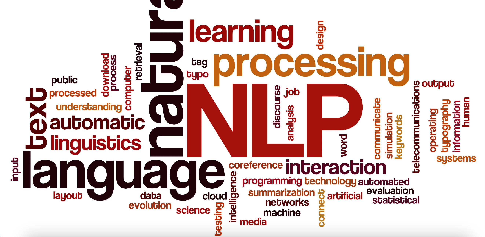
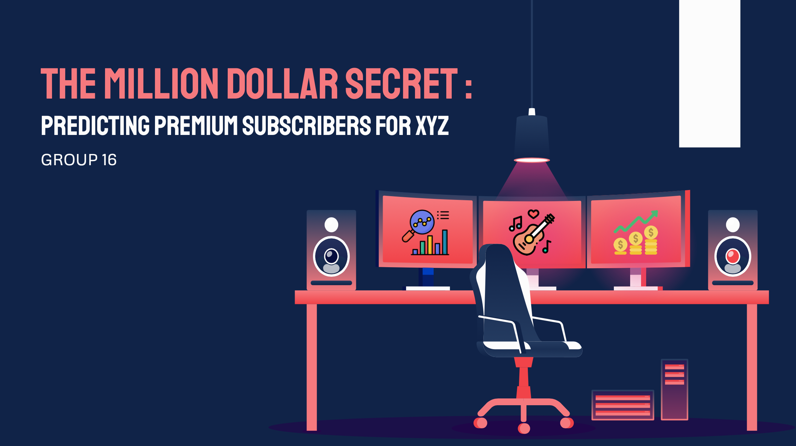

Hello and welcome! I'm thrilled to present my diverse collection of data analytics projects, demonstrating a range of modeling techniques applied across various industries. This portfolio is a testament to the power of data in forecasting and decision-making.
Predictive Sentiment Analytics

In this project, we aim to build a text classification model using BERT to classify 7961 user-generated Facebook post into 3 categories (Appreciation, Complaint, Feedback) based on their content, which enables the business to leverage the insight to understand customer needs and preferences better.
Reinforcement Learning with Bandit Model
This challenge involves a cost-aware A/B testing scenario with multiple treatment options. Subjects are dynamically assigned to treatments to evaluate their effectiveness while minimizing costs linked to less effective treatments. Adjustments in assignments are made based on real-time observations of each treatment's effectiveness.
Pricipal Component Analysis with Python
To understand the Delta Airline fleet models, this project focus on identifying patterns across different aircrafts of Delta Airline, involving correlation visualization between aircraft key features, applying PCA to reduce dimensionality from 44 features, and also K-means clustering to group similar aircrafts together.
Time Series Forecast with R & Python
Applying the learning in Time Series Analysis, this project utilized 4 years daily adjusted closing stock price data of Taiwan Semiconductor Manufacturing Company Limited (TSMC) and make prediction of stock price. Using ARIMA model and LSTM to make prediction for 2 week stock price, exploring the pros and cons of different approaches of time series forecasting.
Predictive Analytics with R

The main goal of this project is to develop a predictive model that identifies the users that are most likely to upgrade to Premium services. This project is a blend of predictive modeling through R studio, which successfully increases customer coversion rate by 116% with 53%
marketing cost reduction
Python Machine Learning Library
Through a bank churn classification problem, the project demostrates the business initiatives of PyCaret: the low-code and automated backend model development democratize machine learning, making it accessible not only to professional data scientists but also to citizen data analysts.
Kaggle: Predictive Modeling with CNN
This Kaggle Competition aims to develop a deep learning solution to enhance pet photo appeal on PetFinder.my, a Malaysian animal welfare platform. The team develop a Convolution Neural Network (CNN) with Keras pre-trained model for Pawpularity score prediction.
Cloud Computing with Databricks
Stopping toxicity content increases game user retention and creates better user experience. This demo leveraged Databricks to trained a NLP model, incorporating Delta Lake, mlflow, and SparkNLP (John Snow Lab) to process gaming text data and detect toxicity behavior.
Causal Inference Analysis with R

To evaluate ad campaign effectiveness, Star digital conducted controlled experiment to measure the casual effect of display advertising. Using R Studio, we demonostrates the casual impact of ad on the likelihood of purchase and the cost-effective channel for the sites.
Predictive Modeling with CNN Model
This classical Kaggle competition required to build a CNN model for cat and dog image classification. With Keras pre-trained model Xception, the model score 90% accuracy in validation data set, and 1.24 LogLoss in testing data set.